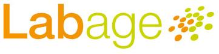
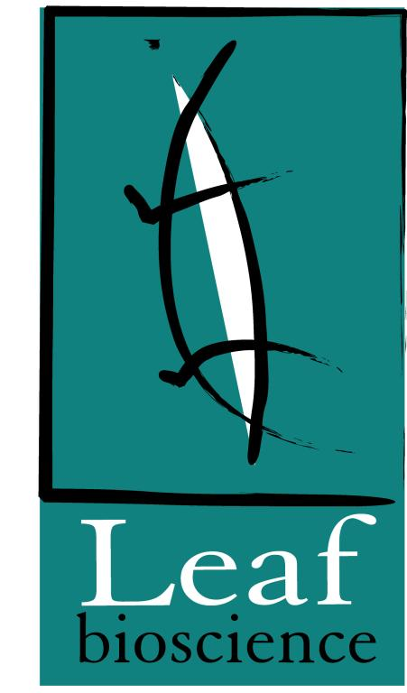

|
|
|

|
|
|
|
SWAT4LS Workshop
Semantic Web Applications and Tools for Life Sciences
November 28, 2008,
e-Science Institute, Edinburgh, Scotland, UK
Workshop Chairs
- Albert Burger, School of Mathematical and Computer Sciences, Heriot-Watt University, and Human Genetics Unit, Medical Research Council, Edinburgh, Scotland, United Kingdom
- Adrian Paschke, Corporate Semantic Web, Free University Berlin, Berlin and Biotechnology Centre, TU Dresden, Dresden, Germany
- Paolo Romano, Bioinformatics, National Cancer Research Institute, Genova, Italy
- Andrea Splendiani, Medical Informatics Department, University of Rennes 1, Rennes, France
Scientific Committee
- Giuliano Armano, DIEE, University of Cagliari, Italy
- Christopher Baker, Knowledge Discovery Department, Institute for Infocomm Research (I2R), Singapore
- Pedro Barahona, Department of Informatics, New University of Lisboa, Lisboa, Portugal
- Liliana Barrio-Alvers, Transinsight GmbH, Dresden, Germany
- Virendrakumar (Virendra) C. Bhavsar, Advanced Computational Research Laboratory, University of New Brunswick, Fredericton, Canada
- Olivier Bodenreider, National Library of Medicine, Bethesda, MD, United States of America
- Matt-Mouley Bouamrane, School of Computer Science, University of Machester, manchester, United Kingdom
- Werner Ceusters, NY CoE in Bioinformatics and Life Sciences, University at Buffalo, Buffalo, NY, United States of America
- Kei Cheung, Yale Center for Medical Informatics, Yale, New Haven, United States of America
- Marie-Dominique Devignes, LORIA, Vandoeuvre les Nancy, France
- Michel Dumontier, Carleton University, Ottawa, Ontario, Canada
- C. Maria Keet, Faculty of Computer Science, Free University of Bozen-Bolzano, Bolzano, Italy
- Graham Kemp, Chalmers University of Technology, Sweden
- Jacob Tilman Koehler, Department of Molecular Biotechnology, Institute of Medical Biology, University of Tromsø, Tromsø, Norway
- Ludwig Krippahl, Department of Informatics, New University of Lisboa, Lisboa, Portugal
- Patrick Lambrix, Department of Computer and Information Science, Linköping University, Linköping, Sweden
- Phillip Lord, School of Computing Science, University of Newcastle, Newcastle, United Kingdom
- Joanne Luciano, MITRE Corporation, Bedford, United States of America
- Olivo Miotto, Nuffield Department of Clinical Medicine, University of Oxford, United Kingdom
- M. Scott Marshall, University of Amsterdam, The Netherlands
- Lyndon Nixon, STI International, Austria
- Stephan Philippi, Institute for Software Technology, University of Koblenz-Landau, Koblenz, Germany
- Alan Ruttenberg, Science Commons, Cambridge, MA, USA
- Matthias Samwald, DERI, Galway, Ireland, and Semantic Web Company, Wien, Austria
- Nigam Shah, Center for Biomedical Informatics Research, Stanford, USA
- Michael Schröder, Biotechnology Centre, TU Dresden, Dresden, Germany
- Robert Stevens, School of Computer Science, University of Manchester, Manchester, United Kingdom
- Luca Toldo, Merck Serono, Darmstadt, Germany
- Tetsuro Toyoda, Genomic Sciences Center, RIKEN, Yokohama, Japan
- Jano van Hemert, National e-Science Centre, University of Edinburgh, Edinburgh, United Kingdom
Organizing Committee
- Albert Burger (Chair),
School of Mathematical and Computer Sciences, Heriot-Watt University, and Human Genetics Unit, Medical Research Council, Edinburgh, United Kingdom - Karen Sutherland and Kenneth McLeod (local arrangements),
School of Mathematical and Computer Sciences, Heriot-Watt University, Edinburgh, United Kingdom - Lee Callaghan (eSI Conference Administrator),
e-Science Institute, Edinburgh, United Kingdom
Supporting Institutes, Scientific Societies and Projects
|
|
e-Science Institute,
Edinburgh, Scotland, United Kingdom National Cancer Research Institute,
Genova, Italy
|
|
|
|
Biotechnology Centre, TU Dresden, Dresden, Germany School of Mathematical and Computer Sciences,
Heriot-Watt University, Edinburgh, Scotland, United Kingdom |
|
|
|
Université de Rennes 1, Rennes, France Corporate Semantic Web,
Institute of Informatics, Free University Berlin |
|
|
|
||
Sponsors
| Gold Sponsors | ||
|
OMII-UK, Head Office, Southampton, UK LabAge SA,
Liège, Belgium |
 |
|
| Silver Sponsors | ||
|
 |
Leaf Bioscience Srl, Milano, Italy |
|
| Bronze Sponsors | ||
|
Textensor Limited, Edinburgh, United Kingdom |
||
Scientific Programme
Overview -
Invited Speakers
Programme -
Presentations
Call for Papers
Overview
Rationale -
Topics
Type of contributions
Deadlines -
Instructions
Registration
Overview
Registration fees
Registration form
Useful Info
Contacts -
Location
How to reach
Deadlines -
Hotels
Organization
Chairs
Scientific Committee
Organizing Committee
Institutes & Societies
Sponsors